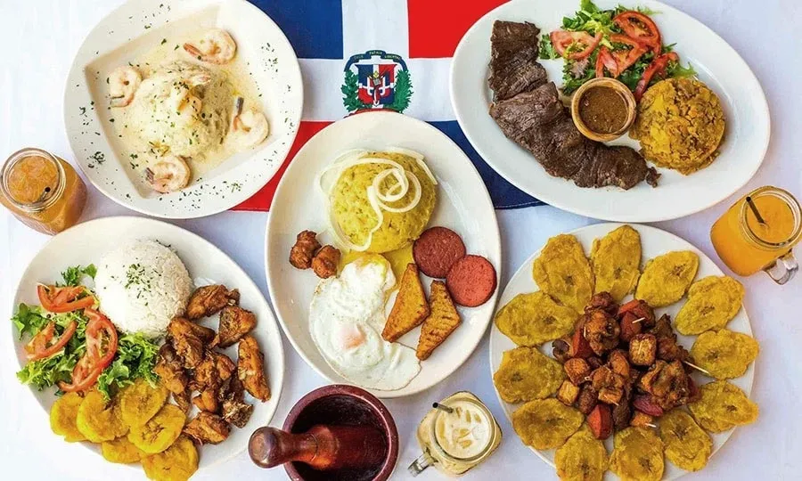
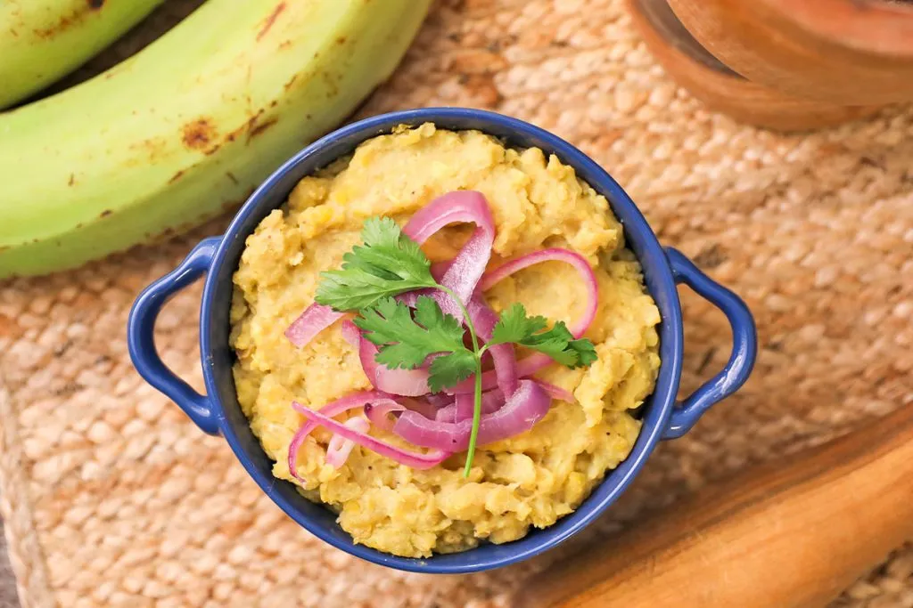
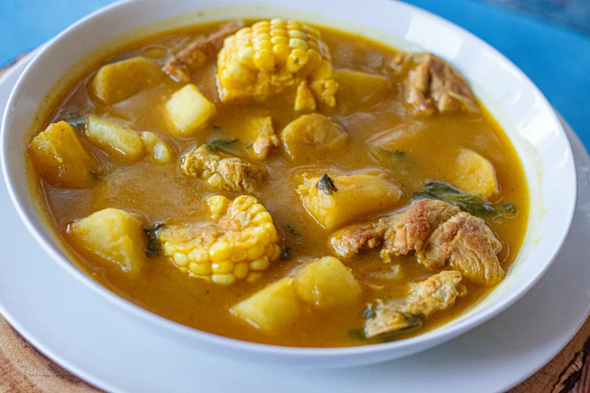
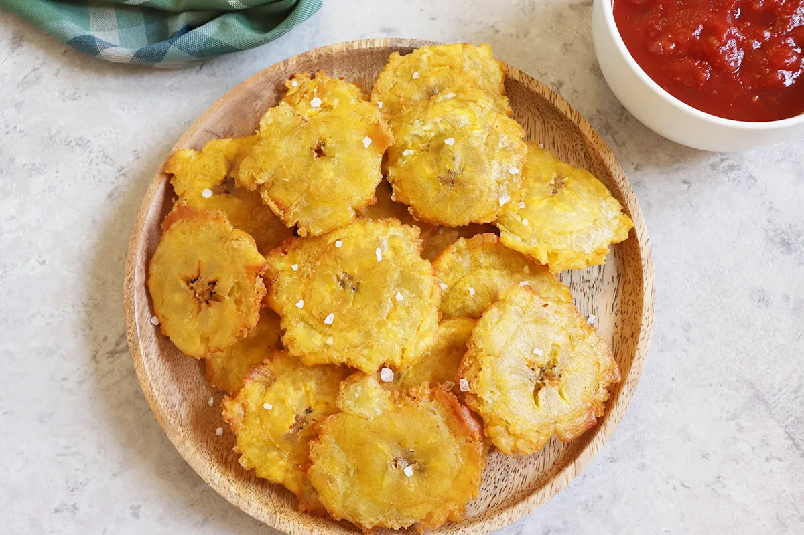

Traditional Dominican Food
Dominican cuisine is full of flavor, culture, and tradition. From mangú to sancocho, food is an important part of Dominican life.

Mangú
Mangú is a traditional Dominican breakfast made with mashed plantains, onions, eggs, cheese, and salami.

Sancocho
Sancocho is a rich Dominican stew prepared with meat, vegetables, and root foods.

Tostones
Tostones are fried green plantains that are crispy, salty, and popular across the Caribbean.